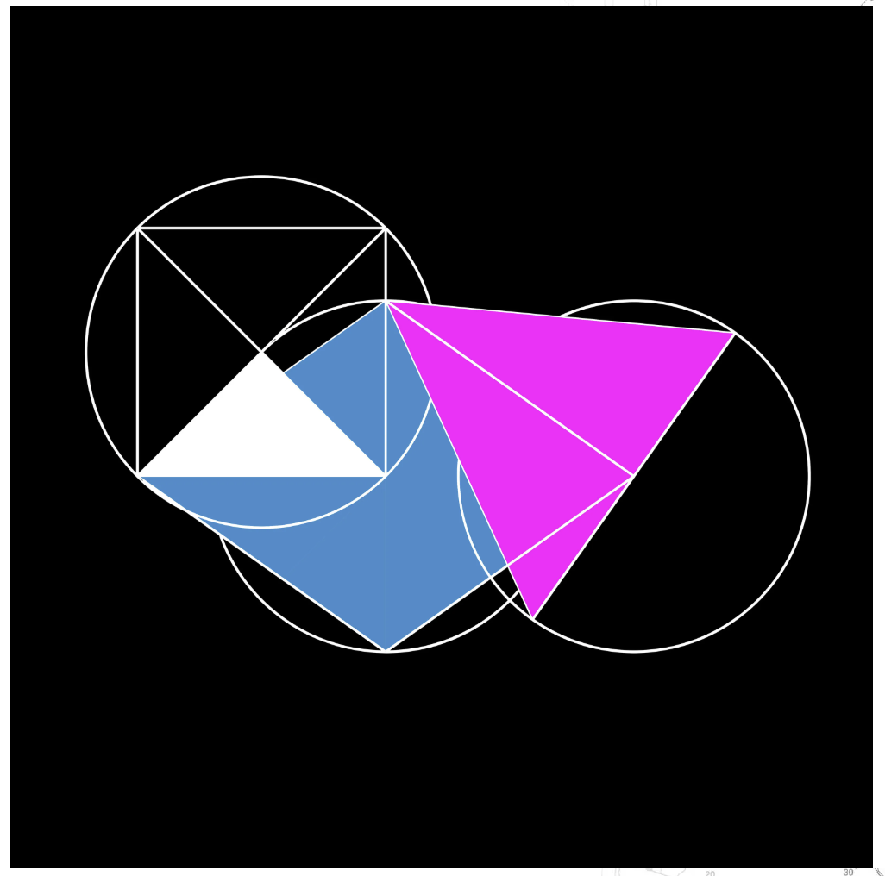
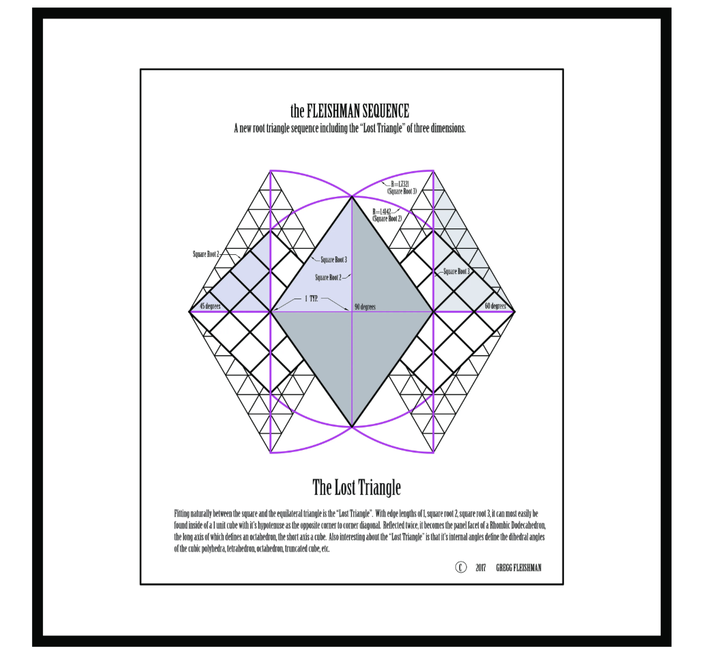
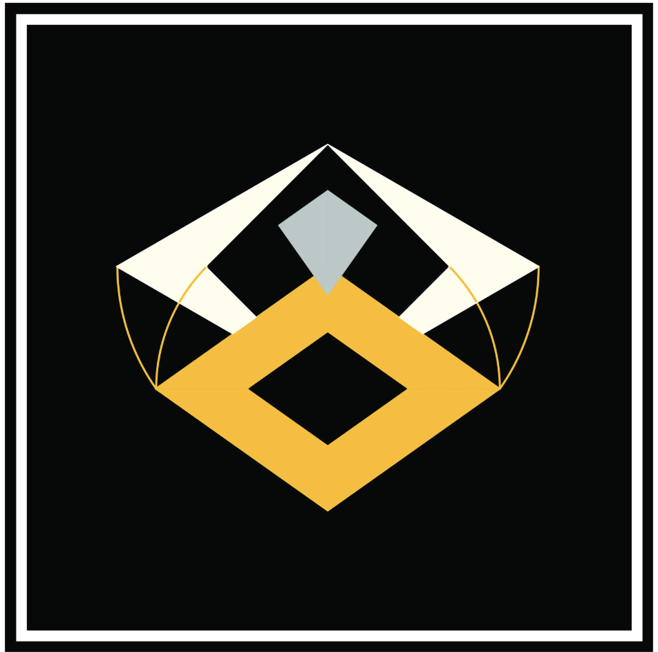

1 : √2 : √3
The Lost Triangle
The principal motion study, surrounded by smaller paths into its mathematics, drawings, and cube assembly.
01 · Main film
The Lost Triangle
preparing the construction…
02 · Read
Mathematics

03 · Watch
Sequence with Drawings

04 · Build
Cube Assembly
